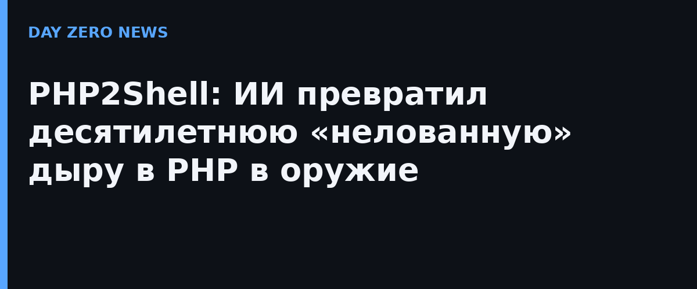

Семейство уязвимостей получило имя PHP2Shell и два номера: CVE-2026-109618 и CVE-2026-109619. Это ошибки работы с памятью в самом движке PHP: при фатальных сбоях (например, нехватке памяти) внутри остаётся повреждённое состояние, которое перехватывает следующий запрос. Итог — чтение чужой оперативной памяти сервера (пароли, токены, ключи API, сертификаты) или выполнение кода атакующим без аутентификации. Задететы все версии PHP за последнее десятилетие — от 5.4 до 8.5. Патчи вышли 21 октября 2026 года.
Wiz сравнивает PHP2Shell с Heartbleed (2014) и Log4Shell (2021): уязвимости ударили не по отдельному приложению, а по общей инфраструктуре веба. PHP — это WordPress, Drupal, Joomla и MediaWiki, на котором работает Википедия. Сама дыра существовала давно, но продемонстрировать её эксплуатируемость было почти невозможно: требовалась многоступенчатая цепочка с подгонкой под раскладку памяти каждого конкретного сервера. Фронтиальные модели позволили исследователям собирать и отлаживать рабочие эксплойты под разные приложения за часы. Вывод авторов тревожный: сложность кода перестаёт быть защитой, если ИИ дешёво и быстро подбирается к любому наследственному коду.
Атаковали ещё до публикации: Amazon Threat Intelligence зафиксировала попытки эксплуатации PHP2Shell в своей телеметрии 17 октября — за четыре дня до официального раскрытия. Волна сканирования прокатилась по всему интернету, а профильные издания окрестили неделю «чёрным октябрём»: старые проблемы безопасности, которые ИИ сделал быстрее и дешевле. В этом инциденте есть и обратная сторона — ИИ здесь сыграл за защитников: именно модели помогли найти баг и проверить патч до раскрытия.
Обновить PHP до октябрьских сборок — это главное и единственное надёжное средство. Пока патч невозможен, крупные облака и CDN (Cloudflare, Akamai, Fastly, AWS, Microsoft и другие) выпустили защитные правила «из коробки» — стоит включить WAF-защиту у своего хостера и проверить, что хостер уже обновился. Самостоятельных инструкций по эксплуатации здесь не будет намеренно: только аналитика инцидента.